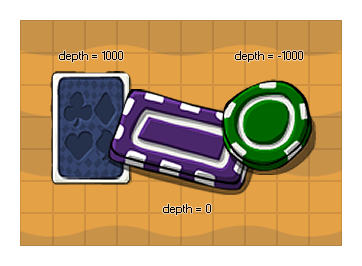

depth
Returns: Real
When you create an object you can assign it an initial
depth which defines how the instances of that object will be
drawn in the room when the game is being played and this variable
can be used to get and to change the depth of the instance while
the game is running. In GameMaker: Studio a low depth (of
negative numbers like -1000) means that the instance will be drawn
"closer" to the player and on top of all instances with a lower
depth, while a high depth (of positive numbers like 1000) means
that the instance will be drawn "further away" from the player and
beneath those instances that have a lower depth.

NOTE: Instances of an object that have the same
depth can be drawn above or below each other even when they appear
to be placed one on top of the other in the room editor. If you
want to guarantee that something is drawn over or under everything
else, you should always set the depth correctly.
WARNING: You cannot set the depth of an instance
in its draw event (all other events are fine). This may lead to
some unexpected behaviour and even crash your game!
depth = -y;
The above code will set the depth of the instance to the negative value of its y position in the room (this is very handy for isometric games).